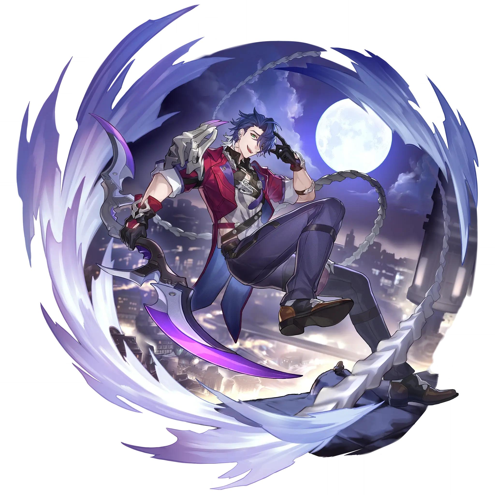

Sampo
Best Sampo build guide for Honkai Star Rail. See Sampo's best Relics, Light Cones, teams, Eidolons, Trace priority, and how to play Sampo.
🔍 Detail Skill
Semua skill aktif dan pasif beserta efeknya.
Deals Wind DMG equal to #1[i]% of Sampo's ATK to a single enemy.
Deals Wind DMG equal to #2[i]% of Sampo's ATK to a single enemy, and further deals DMG for #1[i] extra time(s), with each time dealing Wind DMG equal to #2[i]% of Sampo's ATK to a random enemy.
Sampo's attacks have a #1[i]% base chance to inflict Wind Shear for #3[i] turn(s). Enemies inflicted with Wind Shear will take Wind DoT equal to #2[i]% of Sampo's ATK at the beginning of each turn. Wind Shear can stack up to #4[i] time(s).
After Sampo uses his Technique, enemies in a set area are inflicted with Blind for #1[i] second(s). Blinded enemies cannot detect your team. When initiating combat against a Blinded enemy, there is a #2[i]% fixed chance to delay all enemies' action by #3[i]%.
⚔ Light Cone Terbaik
Diurutkan dari yang paling kuat. Persentase menunjukkan performa relatif terhadap pilihan terbaik.
💎 Relic Set Terbaik
Set terbaik untuk karakter ini, diurutkan berdasarkan prioritas.
📊 Stat Utama
Stat yang dicari pada tiap slot.
👥 Tim yang Direkomendasikan
Karakter yang sering dipasangkan bersama Sampo.
 Kafka
Kafka
🔗 Lanjutkan
Build ini dirangkum dari Prydwen Institute. Starwise tidak menghitung sendiri. Angka bisa berubah setelah patch atau karakter baru rilis.